Dette er sidste Level og nu er vi nået til den spændende del, nemlig at bygge en PC.
Husk du aldrig må pille inde i computeren mens den er sat til strøm, det kan skade både dig og dine computer-dele!
Du starter med at tage bundkort og CPU frem. Undgå at rør for meget ved undersiden og de interne komponenter på begge dele. Herefter skal vi til at installere CPU’en. Dette gøres ved at løfte metalbøjlen op over CPU-fatningen, så sokkelskjoldet løftes. Du skal nu finde den lille gule pil på din CPU og matche den med pilen i din CPU-sokkel. Du placerer nu forsigtigt din CPU ned i fatningen til den falder på plads, ingen vold! Når CPU’en sidder på plads, skal du sænke sokkel skjoldet igen ned over din CPU, dette gøres ved at presse metalbøjlen ned, til den låser
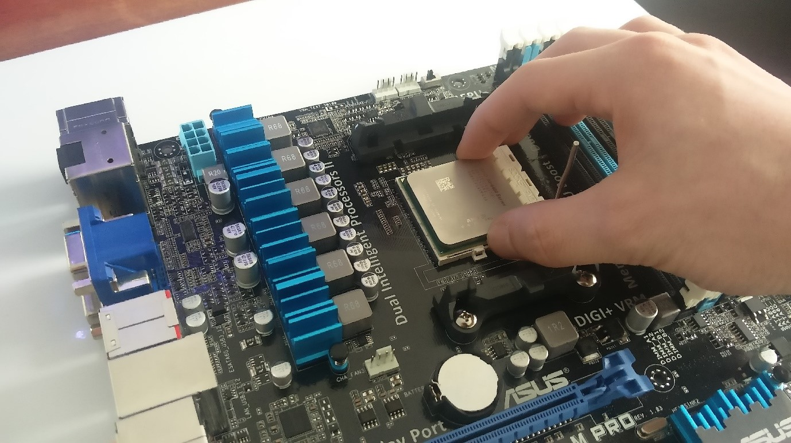 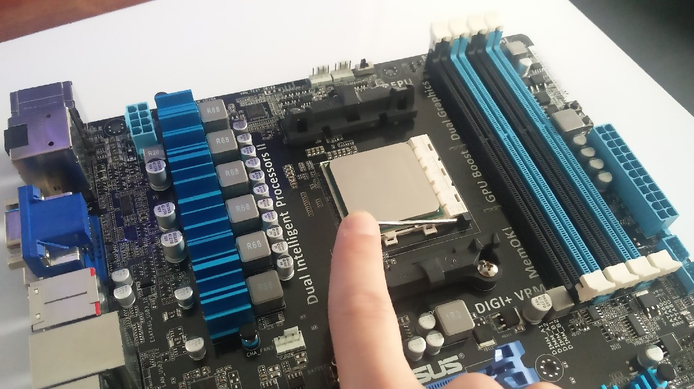Næste skridt vil være at du tager din CPU-køler frem. Du skal først anbringe din grafit plade, eller din kølepasta afhængig af valg, oven på CPU’en. Hvis du bruger kølepasta læg det som en lille klat på størrelse med en ært på midten af CPU’en. Når du har gjort dette, anbringer du dit køletårn oven på CPU’en så det flade areal er mod CPU’en. Mens du holder køletårnet på plads, skruer du de normalt 4 tilhørende skruer i (undgå at rykke for meget på køleren især hvis du bruger kølepasta). Sikrer dig der ikke er kommet noget kølepasta steder hvor det ikke skal være og hvis der er, fjern det forsigtigt.
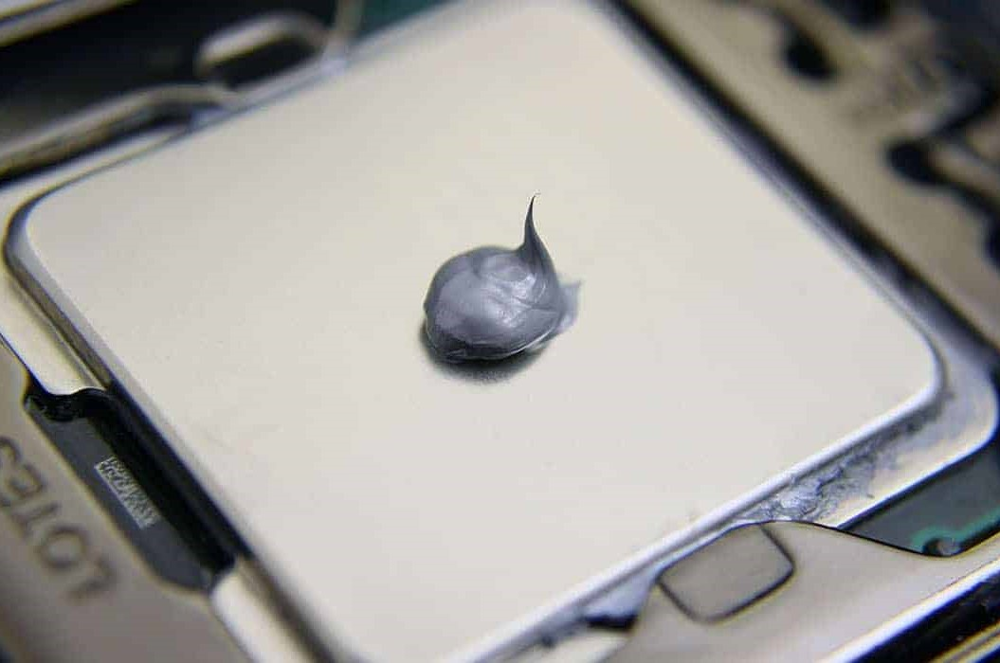 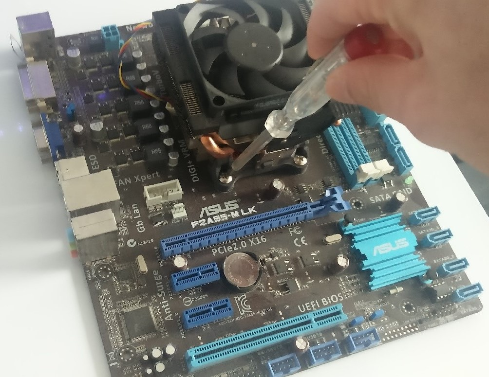Start med at tage begge sidepaneler af kabinettet, det gør at vi adgang fra begge sider til at montere hardware. Eventuelle kabler som allerede sidder i kabinettet kan skubbes til side, da vi først skal bruge dem senere.
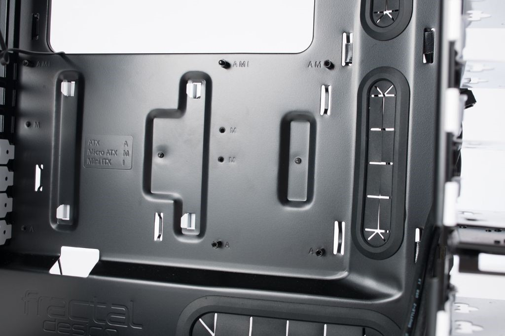Nu er det tid til at montere dit bundkort i kabinettet. Du gør det ved at sætte bundkortet ind så dens in og output udgange passer med IO shielded (et IO-shield er den metal der kommer til at vende ud af kabinettet til alle din kabler). Her kan du møde en smule modstand men det kan lade sig gøre med lidt forsigtighed. .
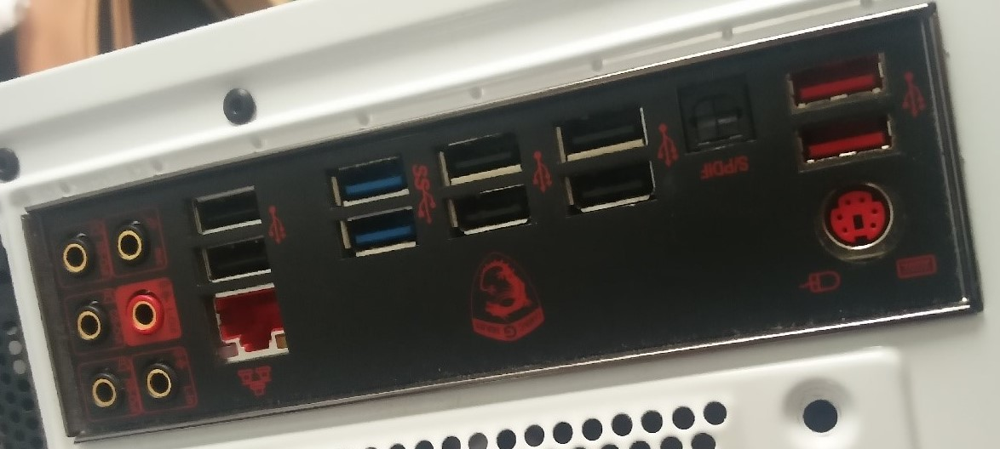Når bundkortet er på plads, skruer du alle skruerne i, men vent med at stramme dem helt til alle skruer er i.
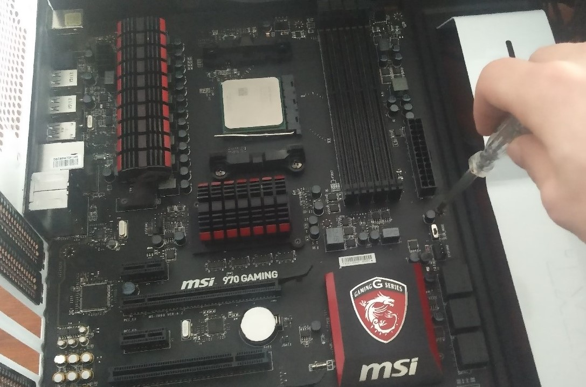Find nu dine RAM blokke frem, der vil ofte være 4 slots du kan sætte dem i, og hvis du kun har én eller to blokke, er det ikke ligegyldigt i hvilke slots de sidder! Du vil primært bruge de slots der er markeret som “dual channel”. Det vil oftest være slot nummer 2 og 4 set fra venstre mod højre men kan også ofte ses på selve bundkortet. Du skubber nu dine RAM blokke ned i slotsene til du hører en kliklyd, frygt ikke nogle gange skal man presse hårdere end man skulle tro.
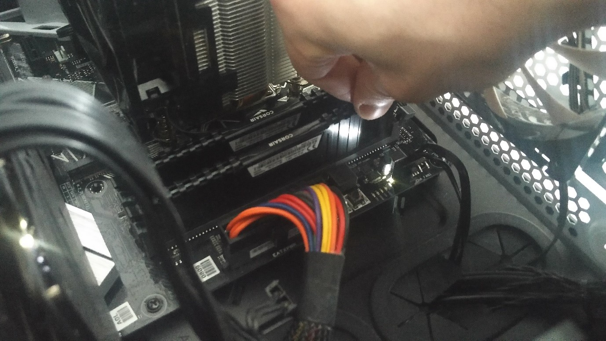PSU’en fæstnes med skruer i bunden af kabinettet således at strømstikket der skal forbindes med stikkontakten, vender ud af PC’en og blæseren vender ned mod bunden af kabinettet Du kan nu forbinde din PSU til dit motherboard med de kabler der fulgte med. Der skal forbindes 2 separate strøm kabler til dit motherboard, tænk gerne lidt over hvordan du trækker dine kabler så de sidder pænt ved at blive trukket langs bagsiden af kabinettet. Det en og største af dine stik skal side på højre side af dit bundkort. Her presses stikket i til det klikker på plads. Det næste stik forbindes i det øverste venstre hjørne af bundkortet, og igen til det klikker på plads.
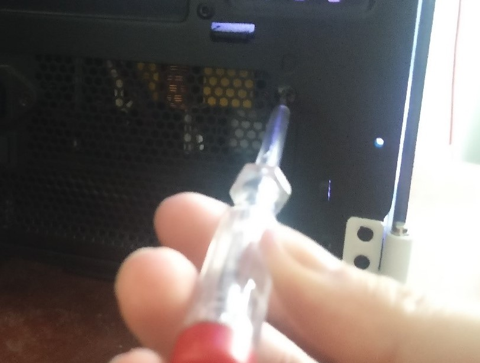PSU’en fæstnes med skruer i bunden af kabinettet således at strømstikket der skal forbindes med stikkontakten, vender ud af PC’en og blæseren vender ned mod bunden af kabinettet Du kan nu forbinde din PSU til dit motherboard med de kabler der fulgte med. Der skal forbindes 2 separate strøm kabler til dit motherboard, tænk gerne lidt over hvordan du trækker dine kabler så de sidder pænt ved at blive trukket langs bagsiden af kabinettet. Det en og største af dine stik skal side på højre side af dit bundkort. Her presses stikket i til det klikker på plads. Det næste stik forbindes i det øverste venstre hjørne af bundkortet, og igen til det klikker på plads.
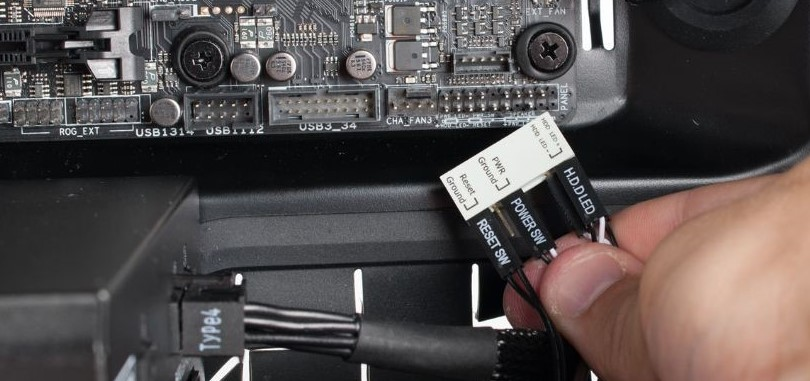 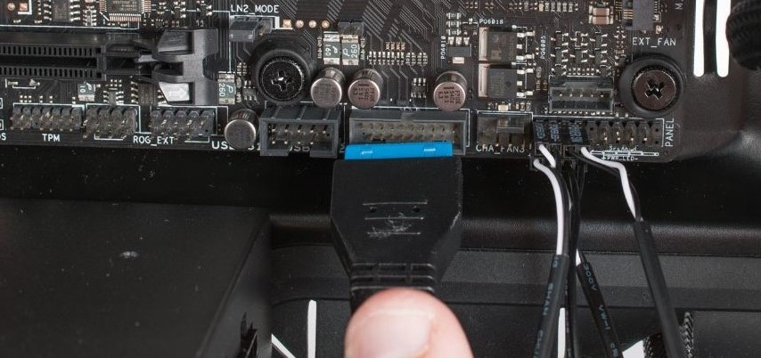Dit kabinet kom med en eller flere blæsere, som skal forbindes til dit bundkort. De sættes på det pins der er markeret som “CH fan” eller “CHASSIS FAN”, hvilket nummer af dem er ligegyldigt (Se billede). Forbind nu også din CPU-køler til bundkortet til de pins markeret som “CPU FAN”, det gælder også hvis den CPU-køler du har valgt er en vandkølet.
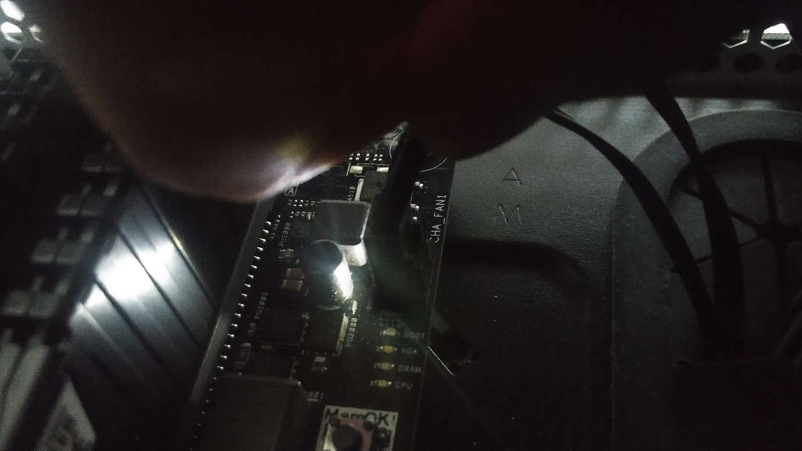Monter nu dine harddiske i kabinettet, er det en HDD sker dette oftest i fronten af kabinettet, men hvordan de sidder fast variere en del fra kabinet til kabinet, hvor nogle er med skruer i små “skuffer” eller med klik funktion. Installere du en SSD vil der ofte være en plads på bagsiden af kabinettet som den kan skrues fast til. En M.2 monteres direkte i bundkortet i dets eget slot. Skruen der bruges her, er ofte 2 delt så den første del fungere som støtte til M.2’en samt som gevindet for den anden del. Forbind nu dine harddiske (med undtagelse fra M.2, den er færdig) med SATA kabler til dit bundkort, indgangene på dit bundkort vil være på højre side mod bunden. Husk at dine harddiske også skal have strøm, og skal derfor forbindes med PSU’en med de tilhørende kabler.
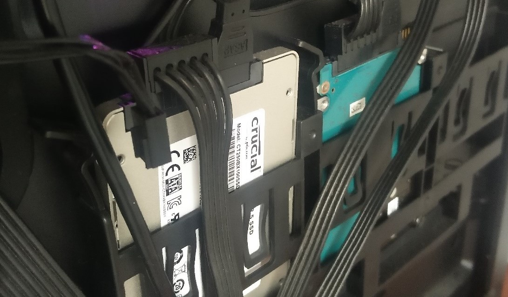Der sidder ofte en lille lås du lige skal åbne ved at vippe en lille plastikdel til siden, samt skrue de skruer ud der blokere i kabinettet, ud mod bagsiden. Du skal nu indsætte din GPU i PCI-slottet i dit bundkort (vælg det tættest på CPU’en). Når du sætter din GPU ned i slottet vil låsen hoppe ned i låst position selv og derved indikere at GPU’en sidder rigtigt. Skru derefter skruerne fra kabinettet i igen så de fastholder GPU’en. Din GPU skal have strøm ligesom alt andet og skal derfor have strøm fra PSU’en med det kabel der passer til. Stikket du bruger her er 2 delt, men ikke alle GPU’er kræver begge dele. Hvis der er indgange til begge dele af strømstikket, indsæt dem begge.
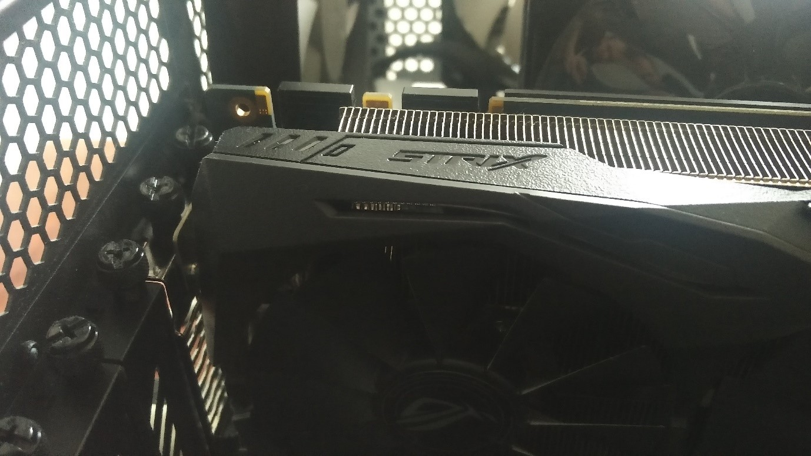 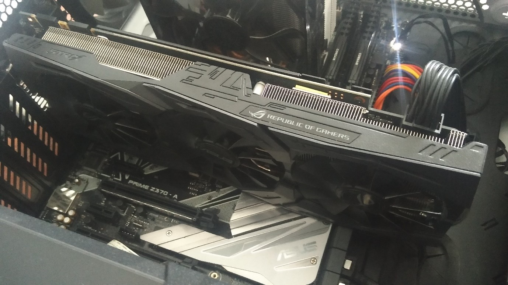 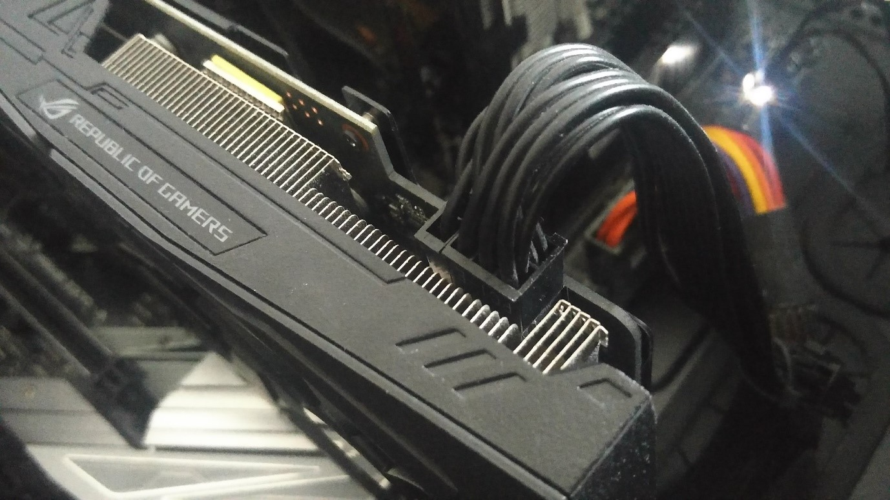Sæt nu begge sidder af dit kabinet fast igen og tillykke du har bygget din egen PC. Når du starter din PC vil den nå en side hvor den viser din CPU er tilsluttet og med et enkelt tryk på ’enter’ sætter den sig selv op. Efter dette er du klar til at installere dit yndlings operativsystem og gå i gang.
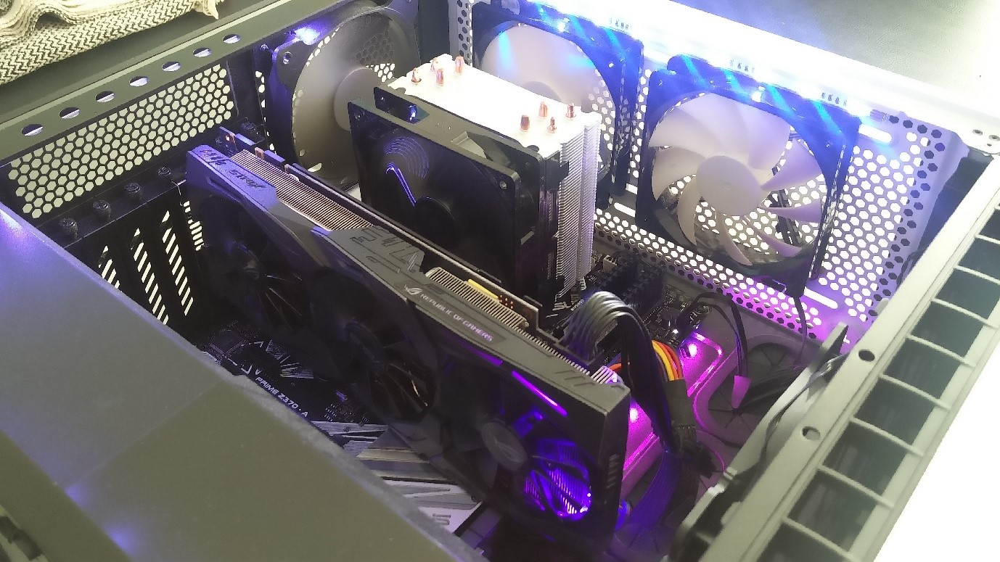 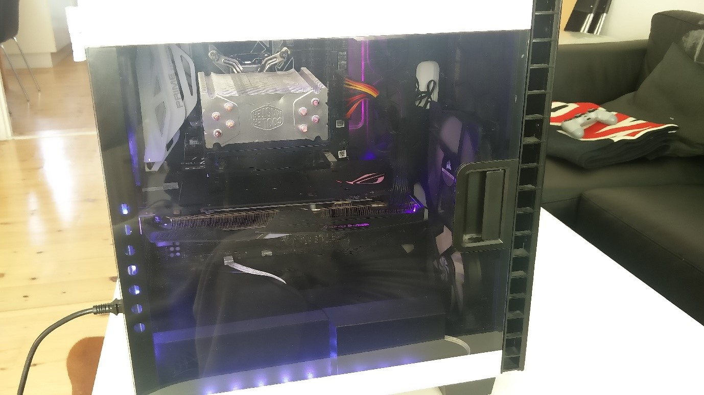Hvis du er nået igennem alle trinnene skulle du gerne stå med din helt egen selv-bygget PC - God fornøjelse! :)
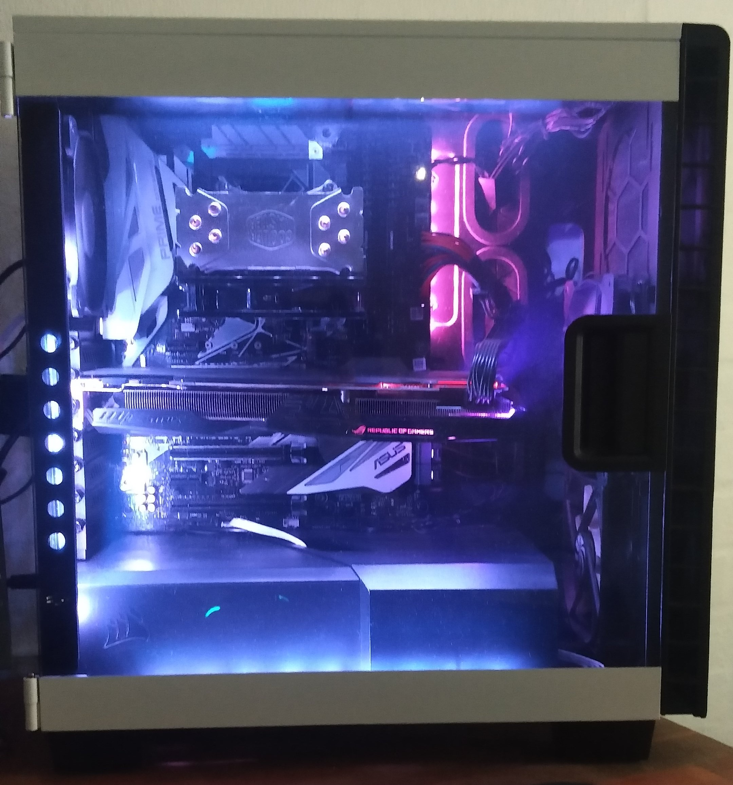